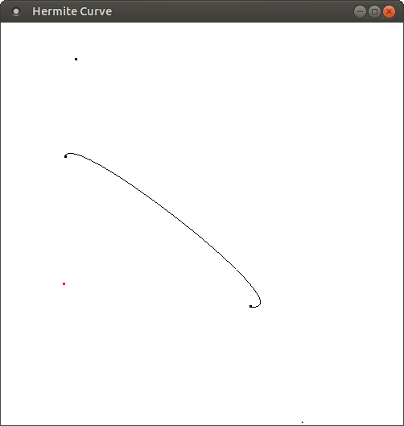

Team members
These are the team members:
- Date
- 19th June 2020
Assignment 3
This is the Computer Graphics Assignment 3.
Task 1 : Implement Hermite Curve.
Task 2 : Implement operations like adding and editing a control point.
Task 3 : Implement Hermite Surface.
Task 4 : Make the surface of revolution for the hermite curve.
Task 5 : Visualize the surface of revolution using a visualizer.
Compile using g++ hermite.cpp -lglut -lGL -lGLU -o hermite And run the object file.
Press s to select the point number you want to edit. You have to enter the point number in the terminal.
Press c to draw the curve.
Press b to make the surface of revolution.
Press esc key to exit.
Use mouse left click to add points.
Use c to display the curve.
Points on the window for the hermite curve. Here, the order of the points should be p0, then the end point of the tangent at p0, then p1 followed by the tangent at the point p1.

Press 'c' for drawing the hermite curve with the following points in space.
Press 's' to edit the curve. You will get a prompt in the terminal to enter the point index you want to edit.
0th index = first point of the hermite curve.
1st index = end point of the tangent at p0.
2nd index = The other end point of the curve.
3rd index = end point of the tangent at p1.

Here we are editing the point p0. You can see how the curve moves as we move the point p0.
Press s and we can edit the tangent as well.

Here we edit the tangent at the point p0. You can see how the curve moves when we move this tangent.
Here we press the 'b' key and the result gets written to the example.off file
This is the off file generated
Here we show a hermite curve for which we will generate the surface of revolution
This is the surface of revolution we generated for the hermite curve above using blender with the off plugin.